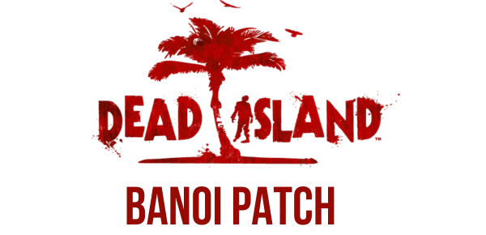

About Me
Hi, I'm a developer based in Australia with a strong passion for C++ and reverse engineering, particularly in older 7th-generation games. I've created a variety of game mods and have developed a deep understanding of game engines.
Featured Projects

DeadSpace2008Fixes
A mod for Dead Space (2008) that adds numerous fixes and improvements.
View on GitHub
Dead World Restoration Project
A large mod for Dying Light with a focus on restoring cut content from the game.
View on Nexus
Dying Light 2: The Outcast
"The Outcast" - a complex mod for Dying Light 2 which aims to restore as much content from 2019 as possible. It includes big changes in graphics/postprocessing, gameplay, weather, UI/UX, NPC models, parkour and textures. I work as a engine specialist on this project
View on Nexus
BanoiPatch
A mod to fix a large amount of issues with Dead Island (2011)
View On GitHubLet's connect
Whether you want to discuss game engines, collaborate on a project, or just say hi, feel free to reach out.